RISKGATE · HYPOTHESIS-ROBUST CONFORMAL VERIFICATION
Certify, Reject, Probe, or Ask — Visualized
How an independent checker verifies LLM-agent actions across competing world hypotheses with a finite-sample safety guarantee (P(certified ∧ unsafe) ≤ α).
CSTR Exothermic Reactor — Live Simulation
Gate State · Hypotheses & Ranked Walk-Down
Plausible World Hypotheses Ĥ_τ(x)
Agent Ranked Proposals & Worst-Case Margins
VERDICT
Embeddable Looping Diagrams (Pure CSS-Animated SVGs)
Each diagram below is a standalone, zero-dependency .svg file in riskgate/examples/animations/ that loops automatically in any browser, GitHub README, or presentation deck.



